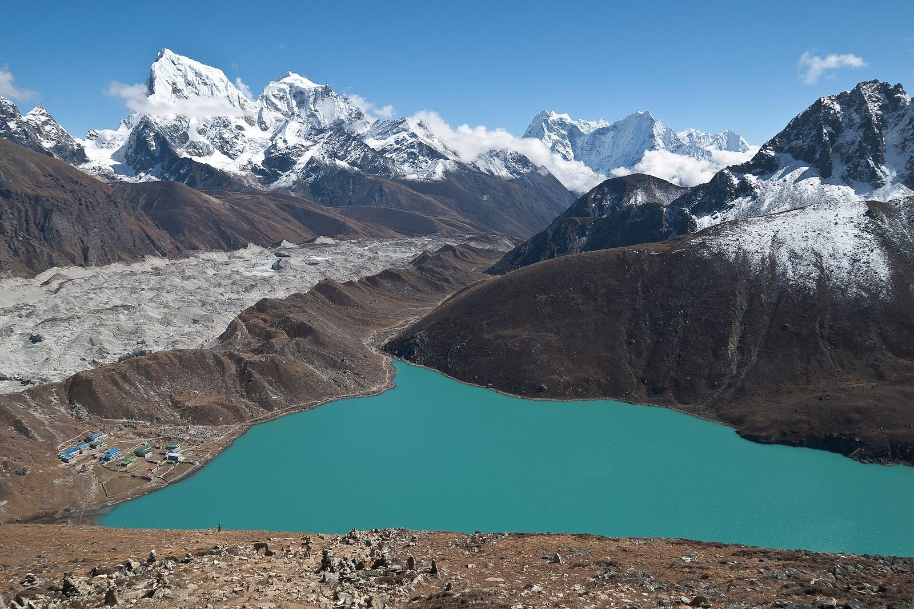
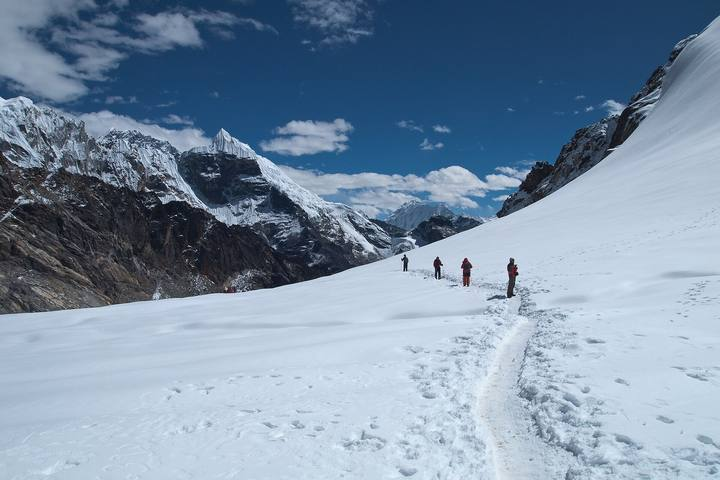

Gokyo Lakes & Gokyo Ri
From Lukla and Namche up the Dudh Koshi to the lakes at Gokyo, with a climb of Gokyo Ri (5,357 m), a day walk to the fifth lake and a return through Phortse.


- Duration
- 11–15 days
- Distance
- 110 kmapproximate
- Highest point
- 5,357 mGokyo Ri · 17,575 ft
- Highest night
- 4,790 mGokyo
- Difficulty
- ChallengingTeahouse lodges
- Best months
- Mar–May, Oct–Nov
Is this trek right for me?
The walking
13 days in all. Most walking days are 4 to 5 hours on foot, and the longest is about 8 hours. Long days and several nights above 4,000 m, or a pass above 5,000 m.
The height
You sleep as high as 4,790 m. Most people feel the altitude at this height. The plan includes the rest days you need: do not shorten it.
Where you sleep
In lodges every night: a simple twin room, a shared bathroom and hot meals in a warm dining room.
The help you need
You may walk without a guide here, but we strongly recommend one, and a porter if you would rather not carry a full pack.
What it costs
A guided trip with a trekking company usually costs USD 1,200 to 1,500 a person, going by the prices 8 companies published for 2026.
Overview
The Gokyo trail leaves the Everest Base Camp route an hour and a half above Namche and follows the Dudh Koshi to its source, the Ngozumpa Glacier, the longest in Nepal. A chain of lakes lies along the glacier's western edge, and the lodges of Gokyo stand on the shore of the third at 4,790 m. From Gokyo Ri, the hill behind them, you can see four of the six highest mountains on earth: Everest, Lhotse, Makalu and Cho Oyu.
It is a shorter trek than base camp and has fewer people on it, but it is not easier on the body. The usual stages climb from Namche to 4,790 m in three walking days, faster than the main trail, and this valley has a long record of trekkers and porters falling ill for exactly that reason. The plan below adds a second night at Machhermo. Take it, or break the climb in some other way; do not drop it to save a day.
Lodges are fewer and plainer than on the base camp side, but every stage has them, and Gokyo itself has bakeries, Wi-Fi and stove-heated dining rooms. The route described here comes back down the east side of the valley through Phortse, a farming village off the main trail. With more days in hand, the Renjo La or the Cho La turns the trek into a loop.
Highlights
- Everest, Lhotse, Makalu and Cho Oyu from the top of Gokyo Ri
- The third lake at Gokyo, blue-green in autumn and frozen white in early spring
- Walking beside the Ngozumpa Glacier to the fifth lake
- Forest between Phortse Tenga and Dole, where musk deer and pheasants are often seen
- A night in Phortse, a working Sherpa village off the main trail
Challenging: Good trails and short stages, but a fast climb to three nights at 4,790 m and a 570 m ascent of Gokyo Ri.
Altitude profile
Height at the end of each day, with the high points in between. Dots are the places you sleep.
The ascent rate is within the usual guideline of about 500 m of sleeping altitude a day above 3,000 m. People still differ, so watch for symptoms. Open in the acclimatization checker.
Day by day
About 48–65 h of walking in total. Times are for a steady pace with short breaks; add more for photos and tea.
-
Day1
Fly to Lukla, walk to Phakding
The flight is over by mid-morning. The trail drops through Chheplung to the Dudh Koshi and follows it to Phakding, so you finish the first afternoon 250 m lower than you started.
16 places to stay in Phakding, such as Trekkers Lodge, Samjhana Guesthouse and Buddha Lodge. See them
- Sleep at
- 2,610 m
- Change
- −250 m
- Walking
- 3–4 h
- Distance
- 8 km
-
Day2
Phakding to Namche Bazaar
Phakding to Monjo to Namche Bazaar
Several bridge crossings, a permit check at Monjo, then the 600 m hill from the last high bridge to Namche. Climb it at the pace of a loaded porter and you will arrive in better shape than those who hurried.
53 places to stay in Namche Bazaar, such as Comfort Inn, The Nest at Namche and KalaPatthar Lodge. See them
- Sleep at
- 3,440 m
- Change
- +830 m
- Walking
- 5–6 h
- Distance
- 11 km
-
Day3
Acclimatization day in Namche
Namche Bazaar to Everest View Hotel to Namche Bazaar
Walk up to the ridge at 3,880 m for a first sight of Everest and come back down to sleep. Tomorrow's stage gains 600 m in one go, so do the walk even if you feel fine.
53 places to stay in Namche Bazaar, such as Comfort Inn, The Nest at Namche and KalaPatthar Lodge. See them
Acclimatization day- Sleep at
- 3,440 m
- Change
- 0 m
- High point
- 3,880 m
- Walking
- 3–4 h
-
Day4
Namche to Dole
Namche Bazaar to Kyangjuma to Mong La to Phortse Tenga to Dole
Leave the base camp trail at Sanasa and climb to the chorten at Mong La, lose 300 m through forest to Phortse Tenga, then climb for two hours past waterfalls, frozen in the colder months, to Dole. The last hour is where the height starts to tell.
4 places to stay in Dole, such as Dole View Point Lodge & Restaurant, Dole and Yeti Inn. See them
Sleeping altitude rises 598 m, a little over the 500 m guideline, balanced by the rest night before it.
- Sleep at
- 4,038 m
- Change
- +598 m
- Walking
- 5–7 h
-
Day5
Dole to Machhermo
A short morning along open hillside through the yak pastures of Lhafarma and Luza, with Cho Oyu coming into view at the head of the valley. Walk slowly and be in Machhermo for lunch.
5 places to stay in Machhermo, such as Lodge in Machermo, Sherpa-Land and Machermo Lodge & Bakery. See them
- Sleep at
- 4,470 m
- Change
- +432 m
- Walking
- 3–4 h
-
Day6
Acclimatization day in Machhermo
Based at Machhermo
Stay a second night. In the morning climb the ridge north of the lodges for an hour or so, for a view up the valley to Cho Oyu and the end of the Ngozumpa Glacier, then rest. If the rescue post is staffed, go to its afternoon altitude talk.
5 places to stay in Machhermo, such as Lodge in Machermo, Sherpa-Land and Machermo Lodge & Bakery. See them
Acclimatization day- Sleep at
- 4,470 m
- Change
- 0 m
- Walking
- 2–3 h
-
Day7
Machhermo to Gokyo
Beyond Pangka the trail climbs a stone staircase beside the stream that drains the glacier, then levels out past the first and second lakes to Gokyo on the third. Not far, but at this height it takes longer than the distance suggests.
8 places to stay in Gokyo, such as Gokyo Resort, Gokyo Namasté Lodge and Ngawang Friendship Lodge & Restaurant. See them
- Sleep at
- 4,790 m
- Change
- +320 m
- Walking
- 3–5 h
-
Day8
Gokyo Ri
The path crosses the stream at the north end of the lake and zigzags 570 m up the hillside. Allow two to three hours up and one down. Go before dawn for clear air, or after lunch on a settled day for evening light on Everest.
8 places to stay in Gokyo, such as Gokyo Resort, Gokyo Namasté Lodge and Ngawang Friendship Lodge & Restaurant. See them
High point day- Sleep at
- 4,790 m
- Change
- 0 m
- High point
- 5,357 m
- Walking
- 3–5 h
-
Day9
Fourth and fifth lakes
Gokyo to Gokyo Fourth Lake to Gokyo Fifth Lake to Gokyo
An easy hour up the trough between moraine and hillside to the fourth lake, then a rougher stretch to the fifth. Climb the moraine crest beside it for the view of Cho Oyu and Everest. Take lunch and water, and turn back by midday if cloud is building.
8 places to stay in Gokyo, such as Gokyo Resort, Gokyo Namasté Lodge and Ngawang Friendship Lodge & Restaurant. See them
- Sleep at
- 4,790 m
- Change
- 0 m
- High point
- 4,990 m
- Walking
- 5–7 h
-
Day10
Gokyo to Phortse by the east bank
Go back down past the lakes, cross the river below the glacier snout to Na and follow the east side of the valley through Thare, Thore and Konar. A long day of contouring with only a few basic tea houses. In snow or ice, descend through Machhermo and Dole instead.
6 places to stay in Phortse, such as Khumbu Restaurant and Lodge, Lodge and Sherpa Village Lodge & Restaurant. See them
- Sleep at
- 3,810 m
- Change
- −980 m
- Walking
- 6–8 h
-
Day11
Phortse to Namche Bazaar
Phortse to Phortse Tenga to Mong La to Kyangjuma to Namche Bazaar
Drop to the bridge at Phortse Tenga, climb 300 m back up to Mong La and follow the balcony trail to Namche. It is short enough to leave the afternoon free for a hot shower and the bakeries.
53 places to stay in Namche Bazaar, such as Comfort Inn, The Nest at Namche and KalaPatthar Lodge. See them
- Sleep at
- 3,440 m
- Change
- −370 m
- High point
- 3,973 m
- Walking
- 4–5 h
-
Day12
Namche to Lukla
Namche Bazaar to Monjo to Phakding to Lukla
Down the Namche hill, along the rolling valley trail and up the final rise into Lukla. Go to the airline office when you arrive and reconfirm tomorrow's seat.
28 places to stay in Lukla, such as Everest Plaza Lodge, Alpine Lodge and Lama Hotel. See them
- Sleep at
- 2,860 m
- Change
- −580 m
- Walking
- 6–7 h
- Distance
- 19 km
-
Day13
Fly out from Lukla
Flights to Kathmandu or Manthali start at first light when the weather allows. If Lukla is closed you wait for the next clear morning, share a helicopter or begin walking toward the road.
Transfer- Sleep at
- 1,400 m
- Change
- −1,460 m
- Flight
- 1 h
Ways to change it
Return the same way
Go down from Gokyo through Machhermo to Dole in four to five hours and on to Namche the next day. It takes the same number of days, has more lodges and is the better choice in snow.
Without the fifth lake day
Drop day 9 for a twelve-day trip. You can still walk to the fourth lake and back in under three hours on the afternoon after Gokyo Ri.
Out over the Renjo La
Cross the 5,360 m pass west of Gokyo to Lungden, then walk out through Thame to Namche in one long day or two short ones. It needs a settled forecast and an early start.
On to Everest Base Camp
Cross the Ngozumpa Glacier to Thagnak and the Cho La to join the base camp trail near Lobuche. Allow four more days.
Route map
The map loads when you scroll here. It needs a connection the first time; tiles you have viewed stay available offline.
The solid line follows footpaths mapped in OpenStreetMap; dashed sections simply join two stops where no path is mapped. It is a guide to where the route goes, not a navigation track: trails are rerouted after landslides, so follow the signs and people on the ground. Marker positions come from OpenStreetMap where we could match a place, and from our own estimates elsewhere.
Download the trail for a map app A GPX file with 99 km of mapped path and every stop; sections with no mapped path are left out. It opens in free apps such as Organic Maps.
When to go
- January: difficult
- February: good
- March: best time
- April: best time
- May: best time
- June: difficult
- July: difficult
- August: difficult
- September: good
- October: best time
- November: best time
- December: good
October and November have the clearest skies. The lakes are open water from about May to November and frozen from midwinter into April. Spring is warmer, with cloud building most afternoons. In January a few lodges at Gokyo stay open, but the trail is icy and nights are far below freezing.
Permits and guide rules
Guide strongly recommended. Khumbu has not enforced the national guide requirement, so you can walk to Gokyo independently. A licensed guide is still worth the fee in this valley: the trail gains height faster than the base camp route, beds between Dole and Gokyo are limited, and someone who knows the early signs of altitude illness can turn you round before it becomes an evacuation.
Sagarmatha National Park
National parkSagarmatha National Park entry permit · Department of National Parks and Wildlife Conservation
| Foreign nationals | NPR 3,000 | person, single entry |
| SAARC nationals | NPR 1,500 | person, single entry |
| Nepali citizens | NPR 100 | person |
Where: At the park gate in Monjo, or in advance at the park counter in the Tourist Service Centre, Bhrikutimandap, Kathmandu.
Children under 10 enter free. Nepali press reports from 2024 to 2026 give the same NPR 3,000, 1,500 and 100. Whether 13% VAT is added for foreigners is disputed: an independent guide says tax has been folded into park fees since 2019, while several agency sites still quote NPR 3,390. We found no official statement, so carry the difference in cash. Keep the permit handy; it is checked at the gate.
Khumbu municipality permit
Local permitKhumbu Pasang Lhamu Rural Municipality entry permit · Khumbu Pasang Lhamu Rural Municipality
| Foreign nationals | NPR 3,000 | person |
| SAARC and Chinese nationals | NPR 2,000 | person |
Where: At the municipality's tourist information centre in Lukla when you land, or at the Monjo checkpoint if you walk in from the road. It cannot be bought in Kathmandu.
The municipality calls it a Trek Card: staff take your passport details and a photo, which takes about 15 minutes. It has stood in for the TIMS card in Khumbu since October 2017, when the fee was NPR 2,000. The municipality's own page now lists NPR 3,000, with NPR 2,000 for SAARC and Chinese passport holders, and its 2024–25 visitor and revenue figures fit that split. A few agency pages say every foreigner pays NPR 3,000. Bring rupees in cash.
Fees and rules change, sometimes mid-season. Treat these as a planning guide and confirm with the Nepal Tourism Board, the Department of Immigration or a registered agency before you travel. Last reviewed 2026-11. All permits and fees
Getting there
The trek starts and ends at the Lukla airstrip. Morning flights go from Kathmandu or, in the busiest weeks of spring and autumn, from Manthali in Ramechhap. Cloud or wind cancels them often enough that a spare day belongs in every plan.
-
Flight: Kathmandu to Lukla · 35 min
Runs mainly outside the peak weeks, when the airlines shift most Lukla flights to Manthali.
-
Flight: Manthali to Lukla · 20 min
Reach the airstrip by a four to five hour drive from Kathmandu, either overnight or the day before.
-
Jeep: Kathmandu to Lukla · 1–2 days + 2 days' walk
By road to Salleri and on to Thamdanda when the track is open, then on foot through Paiya and Surke. The fallback when flights are not moving.
Hazards on this route
Altitude illness
The Gokyo valley gains height faster than the base camp trail, and trekkers and porters are evacuated from Machhermo and Gokyo every season. Do not go up with a headache that has not cleared, and descend toward Dole or Phortse Tenga if symptoms get worse overnight.
Snow and avalanche-prone slopes
After heavy snowfall the trail between Machhermo and the first lake runs beneath loaded slopes; an avalanche at Pangka in November 1995 killed more than twenty people. If a storm dumps snow while you are in the valley, stay where you are for a day and ask lodge owners before moving.
Lukla flights
Flights stop whenever cloud closes the approach, sometimes for days at a time. Keep at least one spare day before any international connection, and two close to the monsoon.
Cold and wind at Gokyo
Night temperatures at Gokyo fall to around minus 10 to minus 15 °C in spring and autumn, and the top of Gokyo Ri is windy even on clear days. Lodge bedrooms are unheated.
Practical tips
- Carry all the cash you need from Kathmandu or Namche; nothing above Namche dispenses money.
- Dole and Machhermo have far fewer beds than villages on the base camp trail. In October and April arrive by early afternoon or have a guide phone ahead.
- At Gokyo, ask your lodge about the state of the east-bank trail before you commit to the descent through Phortse.
- Sunlight off the lakes and old snow is fierce. Wear proper sunglasses and sunscreen even on cold days.
- Treat all drinking water and aim for three to four litres a day; the dry air takes more out of you than you notice.
- Maps disagree by up to 100 m on the heights of Dole, Machhermo and the upper lakes, and times on the east-bank trail to Phortse depend on its condition. Treat those figures as approximate.
Cash machines on the route: Lukla, Namche Bazaar. They run out of cash and go offline, so carry what you need from Kathmandu. Work out how much.
Plan this trek
Choose your dates and see the whole trip on one page: where you sleep each night, who can help you, what it may cost and the papers you need. Then ask for a price.
More tools for this trek
Who can help you on this trek
You may walk without a guide here, but we strongly recommend one, and a porter if you would rather not carry a full pack.
-
A trekking company that arranges everythingUsually USD 1,200 to 1,500 a person for everything on the trek.
-
A guide, and a porter to carry your bagAbout USD 25 to 40 a day for the guide and USD 18 to 25 for the porter.
-
A guideAbout USD 25 to 40 a day.
-
A porter to carry your bagAbout USD 18 to 25 a day.
-
On your ownNo daily cost, and nobody to turn to if something goes wrong.
Do you work on the Gokyo Lakes & Gokyo Ri route as a guide, porter or company? Join TrekkSewa.
Quick answers
How long does the Gokyo Lakes & Gokyo Ri trek take?
Most people take 11–15 days. The itinerary on this page is 13 days, including 2 days for rest and acclimatization.
How high does the Gokyo Lakes & Gokyo Ri trek go?
The highest point is Gokyo Ri at 5,357 m (17,575 ft). The highest place you sleep is Gokyo at 4,790 m.
How difficult is it?
We grade it challenging. Good trails and short stages, but a fast climb to three nights at 4,790 m and a 570 m ascent of Gokyo Ri.
Which permits do I need?
Sagarmatha National Park, Khumbu municipality permit. Fees and where to get each one are listed in the permits section above.
Do I need a guide?
Khumbu has not enforced the national guide requirement, so you can walk to Gokyo independently. A licensed guide is still worth the fee in this valley: the trail gains height faster than the base camp route, beds between Dole and Gokyo are limited, and someone who knows the early signs of altitude illness can turn you round before it becomes an evacuation.
When is the best time to go?
Mar–May, Oct–Nov are best. October and November have the clearest skies. The lakes are open water from about May to November and frozen from midwinter into April. Spring is warmer, with cloud building most afternoons. In January a few lodges at Gokyo stay open, but the trail is icy and nights are far below freezing.
Stage plans on this route vary between operators; treat distances and times as approximate. Reviewed 2026-11. Trails, lodges and rules change; confirm locally before you rely on any detail. Report a correction.
Similar treks
More in Everest
EverestEverest Base Camp via Gokyo & Cho La
Two valleys joined by a glacier pass: Gokyo Ri first, then base camp
 Everest
Everest
Everest Three Passes
The full circuit of Khumbu over the Kongma La, Cho La and Renjo La
 Everest
Everest
Everest Base Camp
Twelve days through Sherpa country to the foot of the Khumbu Icefall
 Everest
Everest
Everest View Trek
A week among Sherpa villages with Everest in view, never sleeping above 3,860 m